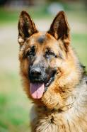
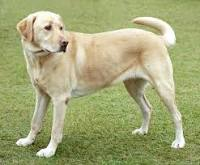
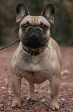
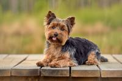

Owczarek niemiecki
Jedna z ras psów należąca do grupy psów pasterskich sklasyfikowana do sekcji psów pasterskich. Według klasyfikacji FCI podlega próbom pracy. Zaliczany do psów obronnych. Typ wilkowaty.

Labrador
Rasa psów należąca do grupy psów aportujących, płochaczy i psów wodnych, zaklasyfikowana do sekcji psów aportujących. Typ wyżłowaty. Podlega próbom pracy.

Buldog francuski
Jedna z ras psów, należąca do grupy psów do towarzystwa, zaklasyfikowana do sekcji małych psów molosowatych. Typ dogowaty. Nie podlega próbom pracy.

Yorkshire terrier (pot. Yrok)
Rasa psa należąca do grupy terierów, zaklasyfikowana do sekcji terierów miniaturowych. Według klasyfikacji FCI nie podlega próbom pracy. Zgodnie z klasyfikacją amerykańską, należy do grupy psów ozdobnych i do towarzystwa. Jest typu lisowatego.